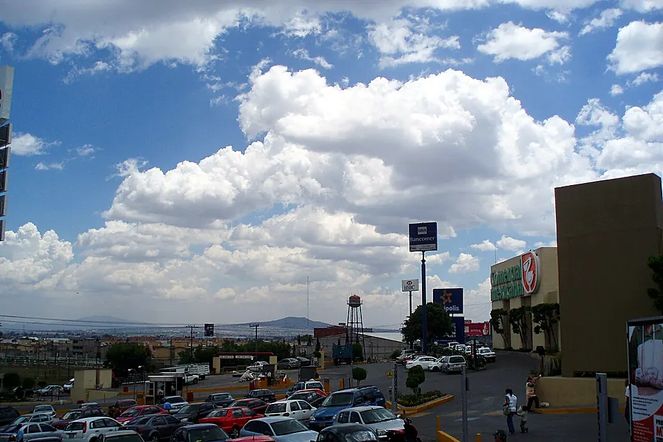

- Probabilidad a 3 años
- —
- Utilidad mensual
- —
- Punto de equilibrio
- —
Sección 00 · Experimenta antes de leer
Mueve un supuesto y mira qué cambia
Dos atajos al simulador. Ambos usan el mismo motor que el resto de la página (misma semilla y mismas fórmulas): lo que ves aquí es lo que verás al abrirlo.
Altura de cada bloque = P a 3 años (escala 0–100 %). Composición esquemática, no geometría catastral.
Sección 01 · El territorio en cifras
Coacalco de Berriozábal: un mercado de 293 mil personas
Antes de modelar probabilidades hay que conocer la población de estudio. Estos indicadores oficiales —tomados del Censo 2020 del INEGI, del portal de datos económicos del municipio (IGECEM/DENUE) y de la medición municipal del CONEVAL— describen el tamaño del mercado, su tejido empresarial y su poder de compra, y son los parámetros base que alimentan al simulador.
![Fachada del Palacio Municipal de Coacalco con arcos y la estatua de Felipe Berriozábal al frente]()
293,444
habitantes (51.9% mujeres, 48.1% hombres)
INEGI · Censo de Población y Vivienda 2020
11,018
unidades económicas activas en el municipio
IGECEM / DENUE · 2020
$17,179.6 M
valor agregado censal bruto (miles de pesos: 17,179,600)
Gobierno de Coacalco · datos económicos (IGECEM/INEGI) · 2020
71.4%
de la población fuera de situación de pobreza
CONEVAL 2020 (26.1% pobreza moderada, 2.5% extrema)
El tejido empresarial crece
Unidades económicas registradas en Coacalco de Berriozábal. Crecimiento medio de 3.7% anual entre 2013 y 2020: más mercado, pero también más competencia.
¿En qué sectores compite un negocio aquí?
Fuente: INEGI, DENUE 05/2026. Coacalco de Berriozábal, 11,554 establecimientos (descarga: 12-nov-2026). Es el directorio vigente; difiere de las 11,018 unidades de 2020 porque mide otro año con otra fuente.
Seis zonas, seis mercados distintos
Coacalco no es homogéneo: el corredor de la Vía José López Portillo concentra cinco centros comerciales y la mayor afluencia, mientras que las colonias habitacionales ofrecen rentas bajas y demanda de proximidad. El simulador asigna a cada zona un índice de afluencia y un costo de renta de referencia.
| Zona | Perfil | Índice de afluencia* | Renta de referencia | Costo de entrada |
|---|---|---|---|---|
| Corredor Vía López Portillo | Comercial regional, 5 centros comerciales | 1.35 | $280/m²·mes | Alto |
| San Francisco Coacalco (Centro) | Centro tradicional, comercio de barrio intenso | 1.15 | $170/m²·mes | Medio |
| Villa de las Flores · Parque Residencial · Bosques | Residencial de nivel medio-alto | 1.10 | $190/m²·mes | Medio |
| Los Héroes · Loma Bonita · Villa de las Manzanas | Residencial de nivel medio, alta densidad | 1.00 | $150/m²·mes | Medio |
| El Potrero · San Rafael · El Olivo | Popular, comercio de proximidad | 0.90 | $110/m²·mes | Bajo |
| Zonas habitacionales periféricas | Demanda local, flujo peatonal limitado | 0.78 | $90/m²·mes | Bajo |
* Índice relativo construido por el equipo (1.00 = promedio municipal) a partir de la caracterización socioeconómica de colonias del municipio y la concentración comercial del corredor López Portillo. Rentas: valores de referencia del mercado local; pueden editarse en el simulador.
Sección 01b · Directorio Estadístico Nacional de Unidades Económicas
Todo México, establecimiento por establecimiento
Conteos reales del DENUE del INEGI para las 32 entidades y todos sus municipios, sincronizados automáticamente con la descarga oficial. Se publican solo agregados: ningún nombre, dirección ni contacto.
Por sector
Por tamaño (personal ocupado)
Año de incorporación al DENUE
Actividades (clase SCIAN)
Sección 02 · El instrumento
Simulador de éxito y rentabilidad
Configura las 22 variables del escenario en las cuatro pestañas: el cálculo es en vivo, cada ajuste mueve al instante el medidor, las gráficas y el mapa de zonas. ¿Sin ideas? Lanza el dado de 🎲 Escenario sorpresa. El modelo devuelve la probabilidad (con un decimal, cálculo determinista y reproducible) de operar con rentabilidad al tercer año, la curva de supervivencia, la distribución de utilidades (Monte Carlo, 2,000 corridas) y los indicadores financieros del proyecto.
Aquí verás qué datos entendí y cuáles ajusté.
Usar Claude como intérprete (opcional)
Escenario vigente · —
—
probabilidad estimada de que el negocio siga operando y sea rentable al tercer año
Configura y calculaCada cuadro = 1 escenario de cada 100.
Lectura estadística del escenario
Curva de supervivencia proyectada
Tu escenario frente al promedio nacional (riesgos proporcionales sobre la tabla INEGI). La banda muestra el rango plausible de P.
Distribución de la utilidad anual (Monte Carlo)
Histograma de 2,000 años simulados: choque anual de demanda, ruido mensual de clientes y ticket, y variación del costo variable. Líneas: P5, mediana y P95.
Punto de equilibrio
Ingresos vs. costos totales según clientes por día; el cruce marca el equilibrio.
Sensibilidad por variable (tornado de β)
Aporte de cada variable a z en el modelo logístico. Las barras rojas restan probabilidad; las granates la suman.
Comparar escenarios
Guarda hasta 3 escenarios y compáralos lado a lado con las mismas métricas.
Exportar y compartir
El enlace guarda todas las variables del formulario: quien lo abra verá exactamente tu escenario.
Mapa de probabilidad por zona
Tu mismo negocio, evaluado en las seis zonas de Coacalco con la renta de referencia y la afluencia de cada una. El color indica la probabilidad de éxito a 3 años. Haz clic en una zona (o en el ranking) para trasladar tu escenario ahí. Activa la capa satélite para ver la fotografía aérea real del municipio.
Mapa real: cartografía © colaboradores de OpenStreetMap · fotografía aérea © Esri y proveedores. La delimitación de zonas es aproximada y fue elaborada por el equipo con fines de análisis; los hitos comerciales se muestran con ubicación aproximada. Cada zona se evalúa con tu escenario actual ajustando renta de referencia y afluencia. Si no hay conexión, se muestra el esquema del equipo.
Ranking de zonas para tu escenario
Sección 03b · Para empresas
Tus propios datos, sin que salgan de tu computadora
Sube el historial mensual de tu negocio y COATL proyecta tu año con tu variabilidad real en lugar de los supuestos del equipo. El archivo se lee solo en este navegador: no se envía a ningún servidor, no se guarda y desaparece al recargar o al pulsar «Borrar».
Columnas esperadas (una fila por mes, mínimo 6 meses):
| Columna | Ejemplo |
|---|---|
mes | 2025-01 |
ventas (MXN) | 185000 |
clientes (opcional) | 1950 |
costo_variable (MXN) | 70300 |
costos_fijos (MXN) | 27000 |
Sección 03 · Estrategia en tiempo real
Qué hacer para no perder: análisis FODA y plan de acción
No basta con saber la probabilidad: hay que poder moverla. Este apartado lee tu escenario en vivo, lo clasifica en Fortalezas, Oportunidades, Debilidades y Amenazas, y construye un plan de acción priorizado. Cada estrategia muestra cuántos puntos de probabilidad ganarías —calculados volviendo a correr el modelo con esa mejora— y la evidencia real que la respalda.
Probabilidad actual
—
potencial con el plan: —
Tres escenarios de tu negocio
Utilidad anual de los 2,000 años simulados con Monte Carlo: el pesimista (percentil 5), el esperado (mediana) y el optimista (percentil 95).
Matriz FODA de tu escenario
F Fortalezas
Lo que ya juega a tu favor (interno)
O Oportunidades
Palancas del entorno que puedes aprovechar (externo)
D Debilidades
Lo que te resta y sí controlas (interno)
A Amenazas
Riesgos del entorno que debes blindar (externo)
Plan de acción priorizado
Ordenado por impacto en la probabilidad · se actualiza al cambiar el simuladorSección 04 · Los modelos detrás del número
Metodología estadística
El simulador encadena cinco herramientas vistas en el curso. Ninguna probabilidad sale «de la nada»: cada una se construye con un modelo explícito, parámetros documentados y datos oficiales como punto de anclaje.
Modelo logístico de puntaje
La probabilidad de éxito a 3 años se obtiene con una función logística: cada variable del escenario aporta un coeficiente β (positivo si protege al negocio, negativo si lo arriesga) y la suma z se transforma en una probabilidad entre 0 y 1.
P(éxito) = 1 / (1 + e^(−z)), z = β₀ + β₁x₁ + β₂x₂ + … + βₖxₖ
β₀ se calibró para que un escenario típico (comercio micro, zona media, sin ventajas ni desventajas) reproduzca la supervivencia nacional a 3 años de la tabla del INEGI 1989–2019 (42.6 %): β₀ = ln(0.4261/0.5739) ≈ −0.298. Los coeficientes de zona, experiencia, reserva de capital, competencia, deuda y margen de seguridad se asignaron por criterio del equipo a partir de la literatura de demografía de negocios. Como ningún β tiene error estándar, el simulador no presenta P como cifra exacta: perturba cada βᵢ con una desviación relativa de 30 % (y β₀ con 0.15) en 1,000 sorteos y reporta el rango plausible P5–P95. Es un análisis de sensibilidad, no un intervalo de confianza muestral.
Conceptos del curso: probabilidad condicional, función logística, variables explicativas.
Tablas de supervivencia y riesgos proporcionales
El tabulado nacional del INEGI (1989–2019) indica que de cada 100 negocios que nacen en México, alrededor de 31 mueren antes de cumplir un año y unos 36 llegan a los 5 años. La esperanza de vida al nacer es de 8.4 años. La curva personalizada eleva la supervivencia nacional a un exponente h (razón de riesgo) derivado de tu probabilidad.
S(t) = S₀(t)^h, h = ln P(éxito) / ln S₀(3)
| Año | 1 | 2 | 3 | 5 | 7 | 10 |
|---|---|---|---|---|---|---|
| S₀(t) nacional | 0.691 | 0.481 | 0.426 | 0.357 | 0.311 | 0.263 |
Conceptos: probabilidad de supervivencia, frecuencia relativa, esperanza de vida.
Simulación Monte Carlo
La utilidad de un negocio no es fija. Cada corrida simula un año con cuatro fuentes de variación: un choque anual común de demanda F (lognormal de media 1 y σ = 0.15: un «mal año» afecta a los doce meses a la vez y no se compensa al sumar), clientes por día Normal(μF, (0.22·μF)²) mes a mes, ticket Normal(t̄, (0.08·t̄)²) y un costo variable que se desvía ±2 puntos porcentuales en el año. Repetimos el año 2,000 veces (números pseudoaleatorios de semilla fija, método Box–Muller) y reportamos la media, la dispersión, los escenarios P5 · mediana · P95 y la probabilidad empírica de terminar con utilidad positiva. Las desviaciones son supuestos del equipo y se declaran como tales.
F ~ LogN(−σ²/2, 0.15²) · Clientes ~ N(μF, (0.22μF)²) · Ticket ~ N(t̄, (0.08t̄)²) · P(U>0) ≈ #{Uᵢ>0}/2000
Conceptos: distribución normal, teorema central del límite, percentiles, probabilidad empírica.
Punto de equilibrio y margen de seguridad
Con el margen de contribución unitario (ticket menos costo variable) se calcula cuántos clientes al mes se necesitan para cubrir los costos fijos. El margen de seguridad —qué tan lejos opera el negocio por encima de su equilibrio— alimenta de regreso al modelo logístico: operar pegado al equilibrio es, estadísticamente, una señal de fragilidad.
PE = CF / (ticket − cv) · MS = (Ventas − PE$) / Ventas
Conceptos: modelos lineales de costo–volumen, análisis de sensibilidad.
Indicadores de inversión: ROI, payback y VPN
Para el inversionista, la probabilidad debe traducirse a dinero. El simulador reporta el retorno anual sobre la inversión, el periodo de recuperación y el valor presente neto a 3 años: los flujos crecen con tu tasa g de adopción de demanda, los costos fijos se encarecen con la inflación π esperada, cada flujo se pondera por la probabilidad de seguir vivo S(t) y todo se descuenta a la tasa que tú definas. El costo variable efectivo cv′ incluye la merma de inventario. Todas las cifras son antes de impuestos (ISR/RESICO), sin depreciación ni sueldo del dueño, y el VPN no incluye valor terminal.
VPN = −I₀ + Σₜ S(t)·Uₜ/(1+r)ᵗ, Uₜ = V₁(1+g)ᵗ⁻¹(1−cv′) − CF₁(1+π)ᵗ⁻¹
Conceptos: valor esperado, esperanza matemática aplicada a flujos de efectivo.
Datos de anclaje
Población y estructura demográfica: Censo de Población y Vivienda 2020 (INEGI). Unidades económicas, personal ocupado y valor agregado del municipio: IGECEM con Censos Económicos y DENUE (8,517 en 2013 → 9,710 en 2018 → 11,018 en 2020). Pobreza: CONEVAL 2020. Supervivencia empresarial: INEGI, «Esperanza de vida de los negocios en México». Los índices de afluencia por zona y las rentas de referencia son estimaciones propias del equipo, editables en el simulador, y así se declaran.
Principio rector: separar dato oficial, supuesto del equipo y resultado del modelo.
Sección 04b · De dónde sale cada número
Trazabilidad: del resultado a su fuente
Sección 05 · Interpretación y decisión
Cómo leer tu resultado
Una probabilidad no es una sentencia: es una medida de riesgo bajo supuestos. Esta guía traduce los rangos del medidor a decisiones de inversión, en línea con los criterios de evaluación de la Jornada Académica.

P ≥ 65% · ESCENARIO SÓLIDO
El escenario supera con holgura la supervivencia promedio nacional. Verifica que P(utilidad>0) del Monte Carlo también sea alta (≥80%) y que el payback sea menor a 24 meses antes de comprometer capital. Aun aquí, conserva la reserva de 6 meses: la cola izquierda del histograma existe.
P < 45% · ESCENARIO FRÁGIL
El modelo estima un riesgo mayor al promedio nacional. No significa «imposible»: significa que, de 100 negocios como el tuyo, la mayoría no llega rentable al tercer año. Replantea giro, zona o estructura de costos antes de invertir.
Supuestos declarados
- Coeficientes β: asignados por el equipo, no estimados con microdatos; por eso P se acompaña de un rango plausible.
- Supervivencia base S₀(t): tabla nacional del INEGI 1989–2019 para t = 1…10. Se aplica a Coacalco sin ajuste municipal.
- Riesgos proporcionales: se impone S(3) = P; la forma de la curva es la nacional.
- Incertidumbre del Monte Carlo: σ de demanda mensual 22 %, de ticket 8 %, choque anual 15 % y costo variable ±2 pp, todos supuestos del equipo.
- Datos por giro y zona: ticket, costo variable, demanda de referencia, afluencia y renta por m² son estimaciones propias, editables en el simulador.
- Finanzas: antes de impuestos, sin depreciación, sin sueldo del dueño ni capital de trabajo; VPN a 3 años sin valor terminal.
Limitaciones y propuesta de mejora
Este es un modelo educativo: los coeficientes logísticos no provienen de una regresión ajustada con microdatos (que el INEGI no publica a nivel negocio), sino de una calibración documentada sobre las tablas de supervivencia oficiales. La mejora natural del proyecto es estimar los β con datos de panel de la Demografía de los Negocios del INEGI, incorporar la distribución de Poisson para llegadas de clientes en giros de bajo flujo y validar las rentas por zona con un muestreo de campo en el municipio. Ningún resultado de esta herramienta constituye asesoría financiera.
Sección 06 · Marco legal y referencias
Aviso legal
Este apartado protege los derechos de los autores del proyecto y delimita con claridad el alcance de la herramienta, conforme a la legislación mexicana aplicable. El uso del sitio implica la aceptación de estos términos.
Titularidad y propiedad intelectual
COATL — Cálculo de Oportunidad y Análisis Territorial Local, incluyendo su código fuente, diseño visual, identidad gráfica (logotipo, cenefa de greca y retícula de 100), textos, ilustraciones, estructura del modelo estadístico y su documentación, es una obra original cuyos autores y titulares de los derechos morales y patrimoniales son Miguel Antonio Cruz García, Bruno Alejandro López Bautista y Alonso Arroyo Cortés, en términos de los artículos 11, 12, 18 a 21 y 24 a 27 de la Ley Federal del Derecho de Autor. La protección existe desde el momento de la creación de la obra, sin necesidad de registro (art. 5 LFDA). Queda prohibida su reproducción total o parcial, distribución, comunicación pública con fines comerciales, o la creación de obras derivadas, sin autorización previa, expresa y por escrito de los autores. Se permite la cita académica con atribución conforme al artículo 148 LFDA.
Naturaleza académica · no es asesoría de inversión
Esta herramienta fue desarrollada como Proyecto Especial de Participación para la Jornada Académica de Negocios (asignatura de Probabilidad y Estadística). Sus resultados son estimaciones de un modelo educativo bajo supuestos declarados y no constituyen asesoría financiera, contable, legal ni recomendación de inversión en términos de la legislación financiera mexicana. Toda decisión de negocio tomada con apoyo en esta herramienta es responsabilidad exclusiva de quien la toma; se recomienda consultar a profesionales certificados antes de comprometer capital.
Limitación de responsabilidad
El sitio se proporciona «tal cual» y «según disponibilidad». En la máxima medida permitida por la legislación aplicable, los autores no garantizan la exactitud futura de las estimaciones —ninguna técnica estadística predice el futuro con certeza— ni serán responsables por daños directos, indirectos, incidentales o consecuenciales (incluidas pérdidas económicas o de oportunidad) derivados del uso o imposibilidad de uso del sitio o de la confianza depositada en sus resultados. Los índices de afluencia por zona, las rentas de referencia y la delimitación de zonas en el mapa son estimaciones propias del equipo, declaradas como tales.
Privacidad y datos personales
Este sitio no recolecta, almacena ni transmite datos personales: no utiliza cookies propias, no tiene formularios de registro y todos los cálculos del simulador se ejecutan localmente en tu navegador, sin enviarse a servidor alguno. Al no existir tratamiento de datos personales, no se actualizan los supuestos de la LFPDPPP; los proveedores de mapas (OpenStreetMap, Esri) pueden registrar solicitudes técnicas de teselas conforme a sus propias políticas.
Archivos de empresas. Los archivos que cargues en la sección «Para empresas» se leen únicamente en tu navegador: no se envían a ningún servidor (la política de seguridad del sitio lo impide), no se guardan en el dispositivo y se eliminan al recargar la página o al pulsar «Borrar mis datos». COATL no tiene acceso a ellos. Si eliges un archivo de Excel, el navegador descarga el lector SheetJS desde cdnjs; esa descarga no incluye tus datos.
DENUE. Se publican solo conteos agregados del Directorio Estadístico Nacional de Unidades Económicas (INEGI), información pública; no se muestran nombres, direcciones ni contactos de los establecimientos.
Contenido y licencias de terceros
Los datos estadísticos provienen de fuentes oficiales de libre uso citando la fuente (INEGI, IGECEM, CONEVAL). La cartografía es © colaboradores de OpenStreetMap bajo licencia ODbL; la imagen satelital es cortesía de Esri y sus proveedores. Bibliotecas: Leaflet (BSD-2), Chart.js (MIT) y tipografías de Google Fonts (SIL OFL). Cada recurso conserva su licencia original; su uso aquí no implica afiliación ni respaldo de sus titulares.
Marco aplicable y jurisdicción
Este aviso se rige por las leyes de los Estados Unidos Mexicanos. Para cualquier controversia relacionada con la titularidad o el uso de esta obra, las partes se someten a los tribunales competentes del Estado de México, renunciando a cualquier otro fuero. Si alguna disposición de este aviso fuera declarada inválida, las restantes conservarán plena vigencia. Los autores podrán actualizar este aviso; la versión publicada en el sitio será la vigente. Este apartado es informativo y no sustituye la asesoría de un abogado titulado.
Referencias
Todas las fuentes utilizadas en el proyecto, con hipervínculo directo.
- INEGI (2020). Censo de Población y Vivienda 2020. Población y estructura demográfica de Coacalco de Berriozábal.
- Gobierno de Coacalco de Berriozábal. Datos económicos abiertos (IGECEM / Censos Económicos / DENUE). Unidades económicas 2013–2020 y valor agregado censal bruto.
- INEGI. Demografía de los Negocios — Esperanza de vida de los negocios en México. Tablas de supervivencia empresarial por sector.
- CONEVAL (2020). Medición de pobreza a nivel municipal. Indicadores de pobreza moderada y extrema.
- Secretaría de Economía. Data México: perfil de Coacalco de Berriozábal. Indicadores económicos complementarios.
- Cámara de Diputados. Ley Federal del Derecho de Autor. Fundamento de la protección de la obra.
- OpenStreetMap Foundation. Copyright y licencia ODbL. Cartografía base del mapa real.
- Leaflet (BSD-2-Clause). Biblioteca de mapas interactivos.
- Chart.js (MIT). Biblioteca de gráficas estadísticas.
- Google Fonts (SIL Open Font License). Tipografías Bricolage Grotesque, Hanken Grotesk y Spline Sans Mono.